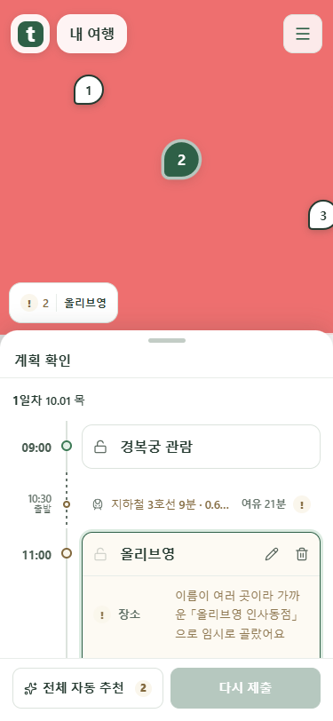
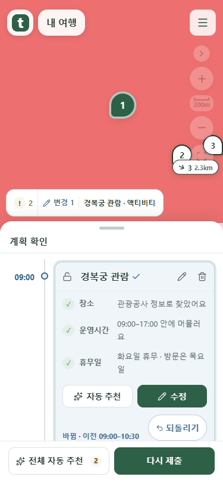
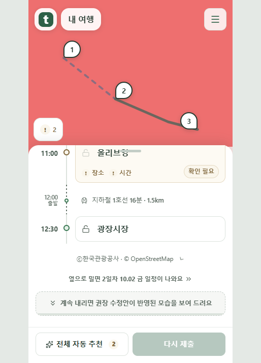
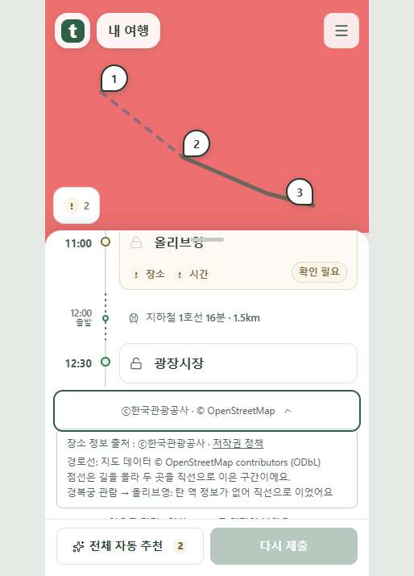
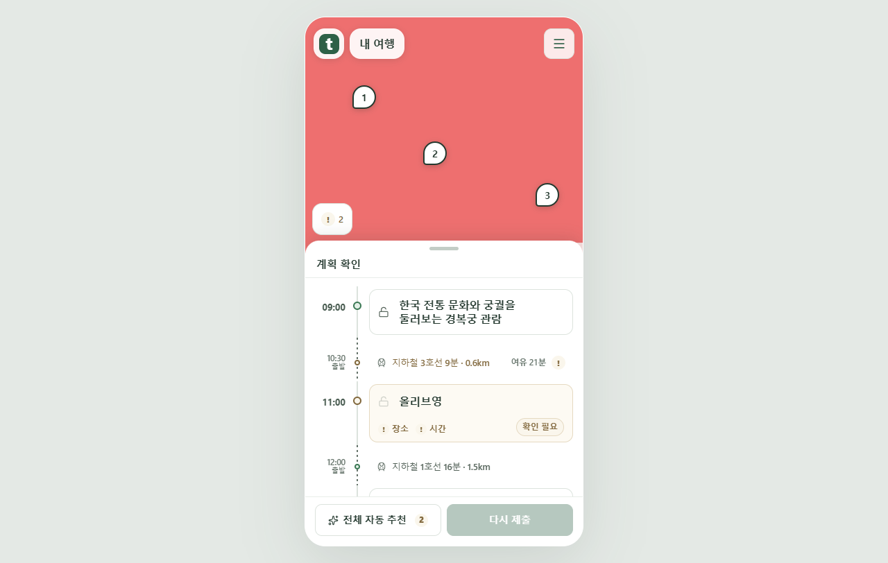

카드와 출처 안내를 정리한 화면
실제 프론트엔드를 Chrome에서 촬영했습니다. 데이터는 mock 서버 응답이며 붉은 지도 배경은 시험용 타일입니다. 공개 서비스 배포 전 화면입니다.
카드 배치
확인 필요 · 카드 오른쪽 아래
변경 체크 · 제목 옆, 되돌리기 · 오른쪽 아래
출처 안내
평소에는 작은 한 줄
일차·수정안 전환 중에는 잠깐 숨고, 전환 후 다시 나타납니다.
누르면 정책·경로 설명 펼치기
긴 제목도 유지되는 PC 화면
